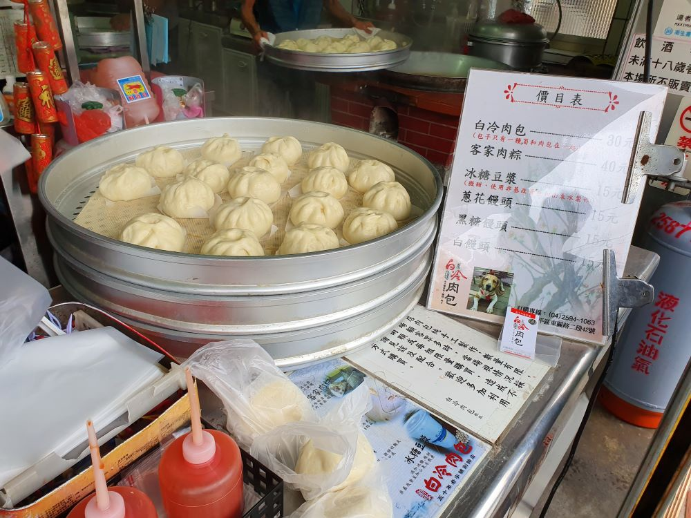
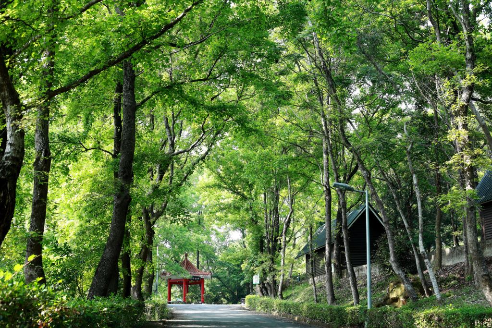
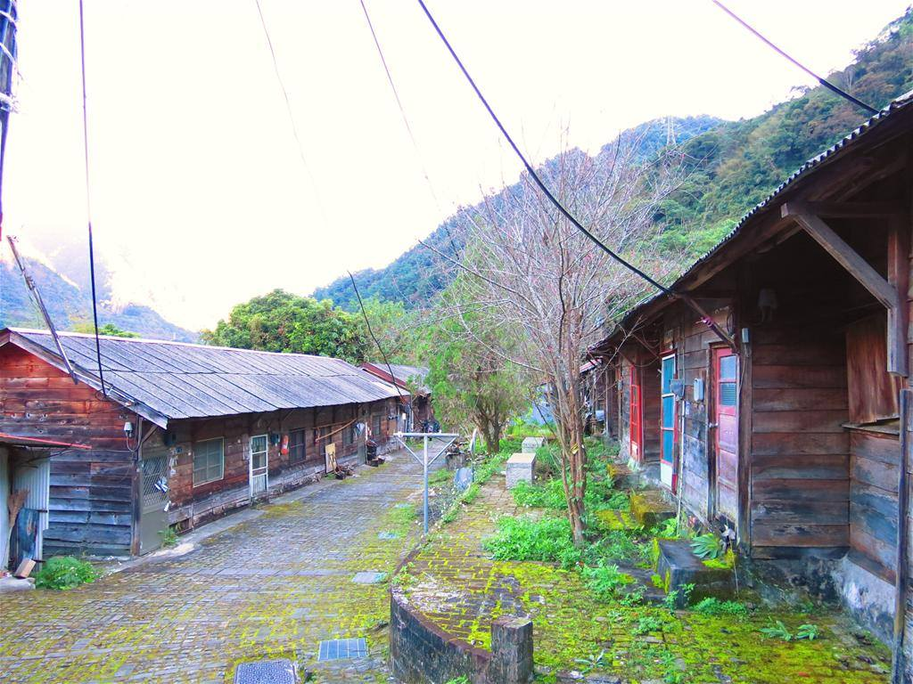

附近景點
谷關
1.八仙山森林遊樂區
八仙山森林遊樂區位於台中市和平區，主峰海拔2366公尺，約為八千台尺，因而得名「八仙」。
區內森林蒼翠，氣候清爽宜人，十文溪與佳保溪匯流其間，溪水源自深山森林，水質清澈，溪中大小岩石遍佈，處處潺流。

自然生態資源豐富且在日治時期為台灣三大林場之一，擁有濃郁的林業人文風情，是假日休閒體驗大自然最佳的去處！
2.大雪山森林遊樂區
台灣擁有全世界最大面積的高山巨木林，座落在雪山山脈西南向主稜後段的大雪山國家森林遊樂區擁有最完整的高山巨木林相。
涵蓋了鐵杉林、檜木林及殼斗科植物為主的暖溫帶闊葉林等，每一生態帶均有代表性的巨木留存，是林務局所轄的森林中林相變化最為細膩的遊樂區。

地表起伏變化大，海拔高度由最高的小雪山(高度為2,997公尺)走向西南的鞍馬山、船型山及稍來山延伸至約1,000公尺的稍來溪溪谷。
3.谷關溫泉文化館
溫泉文化館是全國第一座以溫泉為主題的展示館。

館內除了介紹溫泉相關資訊外，並提供遊客諮詢服務，帶你更認識谷關、認識溫泉的文化，附設互動式多媒體生動介紹谷關當地地形、環境、溫泉生態等服務....
戶外規劃有表演廣場、休閒步道、生態教育池、公園綠地等區域可以參觀~
4.白冷冰棒肉包
來到谷關，不管天熱天冷，路經電廠的遊客們，必買口味多款價格便宜的白冷冰棒，冰棒對面的熱豆干，假日生意也很好。可以消消暑解熱~~
這家白冷肉包隱身在小雜貨店裡，就在台電大甲溪發電廠往谷關方向，過白冷冰棒路口靠左邊直直走，白冷派出所對面。好在招牌、路標都頗為明顯，車速慢一點就會發現得到它。

5.谷關古靈寺
古靈寺是谷關地區唯一的寺廟，也是當地居民的信仰重心。
建於昭和25年，在八七水災之時曾被沖走、在民國86年時因電線走火而遭祝融燒毀、在九二一大地震時被損毀，歷經這麼多風雨災難，觀音菩薩卻始終安然無恙，繼續保佑著谷關地區的人民。

在谷關遇到大事情或祭典活動一定會盛大的請示觀音，當地的業者對於古靈寺更是倍感尊崇。
6.東勢林場
東勢林場，台灣最美的森林生態花園，土地面積212公頃，在彰化縣農會精心擘劃下，秉持「親切、自然」的理念，採森林多角化經營，將東勢林場建設成自然生態的遊憩重鎮。
位在台中市東勢區東方的大安溪畔，海拔500-700公尺，平均溫度在20-25度之間，氣候宜人，是渡假納涼的好去處。

林場距東勢區上僅八公里，有勢林街相通，由南北而來，沿高速公路接國道4號而下，至林場僅30分鐘車程，也有豐原客運班車行駛，相當便利。
東勢林場一年四季有看不完的花卉：春櫻、夏油桐、秋楓、冬梅，舉凡梅花、櫻花、杜鵑花、油桐花、紫薇、聖誕紅、楓葉…等，多采多姿的花花世界，值得大家欣賞，還有豐富的生態，螢火蟲、獨角仙、鍬形蟲、蛙類、鳥類…等。
森林浴場是林場的主題特色，SPA健康步道讓你恣意徜佯於山林芳香中，沿途並有各種植物解說牌，提供遊客享受知性與感性的森林之旅。

還能在這邊體驗森林之中的樂趣，供小孩子玩樂去處~
7.東豐自行車綠廊
東豐自行車綠廊的舊名是東豐鐵路，又叫做東勢支線，建於民國四十七年，是台灣山線鐵道的支線之一，貫穿豐原、石岡、東勢三地。
當時東勢地區的紅檜、扁柏和杉木要運送，加上修建石岡水壩工程材料上的運輸，還有十萬公噸的農特產品貨運，東豐鐵路因此應運而生

對鐵路沿線的居民來說，東豐鐵路是一段過去生活的回憶。
8.松鶴部落
德芙蘭部落源也和裡冷一樣居住在南投縣境內，由頭目帶領族人先遷徙到今八仙，於民國三年時再遷到今松鶴現址。
日據時代，德芙蘭部落被稱為「久良栖」社，譯音為「古拉斯」，據說是以開山頭目的名字命名。頭目叫Kurasu‧Watan，Kurasu日語譯音漢字就是久良栖。
直到民國 50 幾年時，一位鄉長有感於此地盛產松樹，且常有鶴來棲息，遂逕自改名為「松鶴」。

9.捎來步道
捎來吊橋，吊橋附近是大甲溪及捎來溪的匯流處，「捎來」是昔日捎來溪附近泰雅族部落頭目的名字。

遠眺谷關溫泉飯店及龍谷吊橋，通往昔日的龍谷天然樂園(已封閉)。
谷關捎來步道全長約1300公尺，是谷關七雄老四-波津加山步道的暖身路段，步道500 - 800公尺是陡上坡，1000 - 1200公尺是陡降坡。
但通行這個步道有人數限制，所以要來這邊的時候要注意一下。
10.馬崙山步道
馬崙山為雪山山脈白姑大山向西延伸之山岳，「谷關七雄」中排行老二，是中部著名的中級山。
山徑早年是為新山分場員工運補生活用品修築的步道，蔣公視察後將登山步道重新整修拓寬，保留了伐木歷史遺跡，建有涼亭、觀景台等設施。
沿途林相優美、生態豐富、自然景觀原始，踏在舖滿松針的步道上，腳感柔軟有彈性，路徑寬明，指標清楚，可謂是五星級的登山步道，為谷關七雄中最優美的一條路線。
 333桃園市龜山區德明路5號
333桃園市龜山區德明路5號 TEL:(03)1234-5678
TEL:(03)1234-5678 EMAIL:123456789@gmail.com
EMAIL:123456789@gmail.com